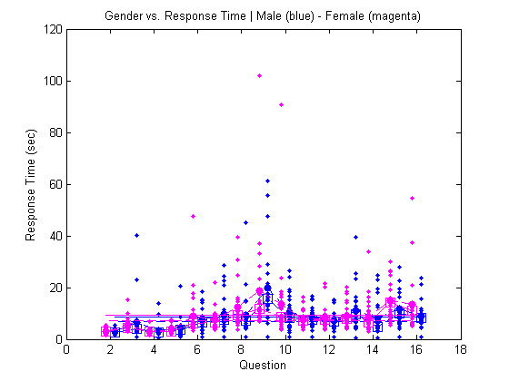

Final Project: Andrew Gerst
clear all; close all;
try
load('survey_data.mat');
catch exception
A = [];
end
numrows = length(A(:,1));
questions = 2:length(A(1,:));
males = find(A(:,1) == 0);
females = find(A(:,1) == 1);
shift = .2;
if length(males) > 0
male_data = A(males,2:end);
male_averages = sum(male_data,1) / length(males);
plot(questions+shift, male_averages, '--b.', 'markersize', 20);
hold on
male_medians = median(male_data,1);
plot(questions+shift, male_medians, '--bs', 'markersize', 10)
plot(questions+shift, male_data, '.b');
male_average(1:length(questions)) = sum(male_averages) / length(questions);
plot(questions+shift, male_average, '-b');
male_maverage(1:length(questions)) = sum(male_medians) / length(questions);
plot(questions+shift, male_maverage, '--b');
end
if length(females) > 0
female_data = A(females,2:end);
female_averages = sum(female_data,1) / length(females);
plot(questions-shift, female_averages, '--m.', 'markersize', 20);
hold on
female_medians = median(female_data,1);
plot(questions-shift, female_medians, '--ms', 'markersize', 10)
plot(questions-shift, female_data, '.m');
female_average(1:length(questions)) = sum(female_averages) / length(questions);
plot(questions-shift, female_average, '-m');
female_maverage(1:length(questions)) = sum(female_medians) / length(questions);
plot(questions-shift, female_maverage, '--m');
end
title('Gender vs. Response Time | Male (blue) - Female (magenta)');
xlabel('Question');
ylabel('Response Time (sec)');
